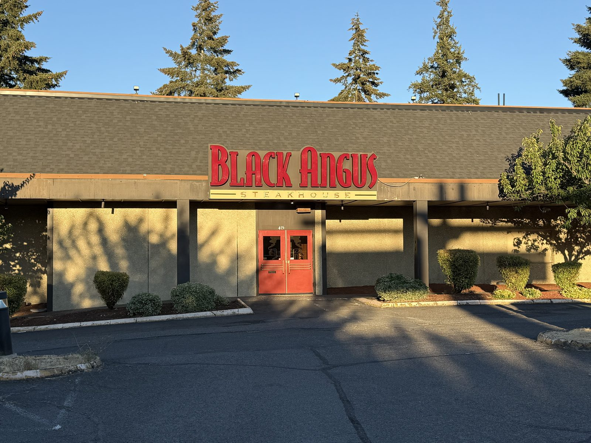
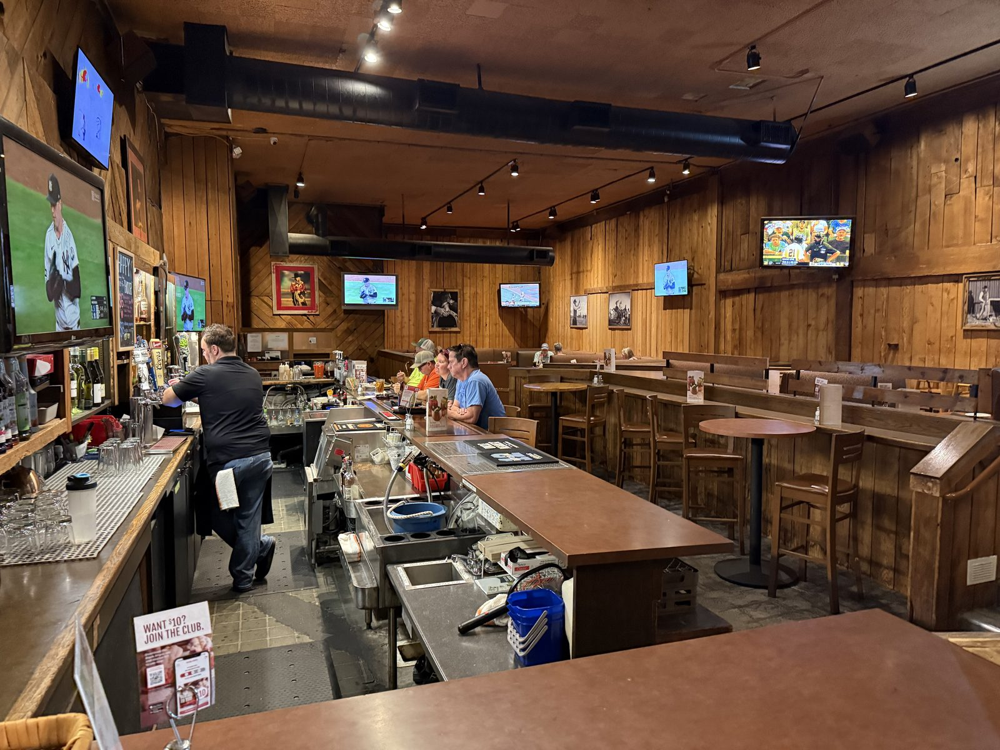
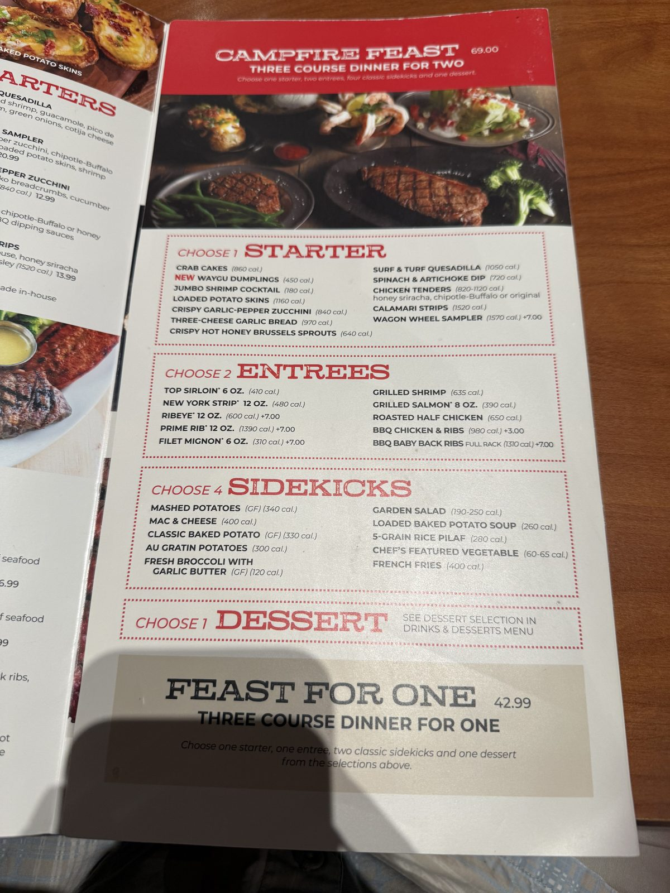
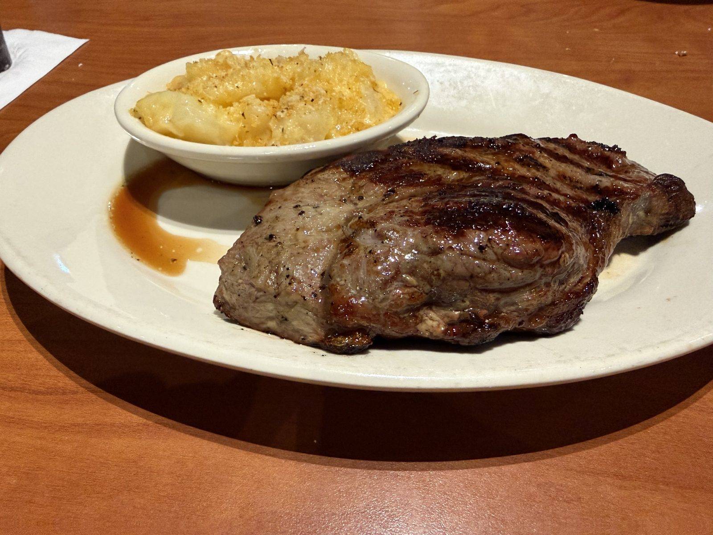
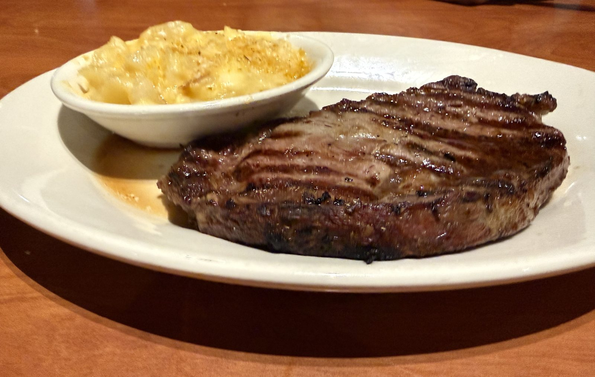
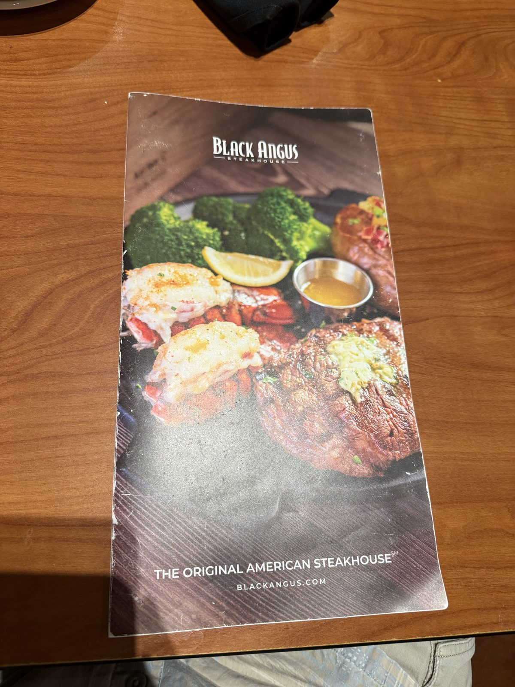
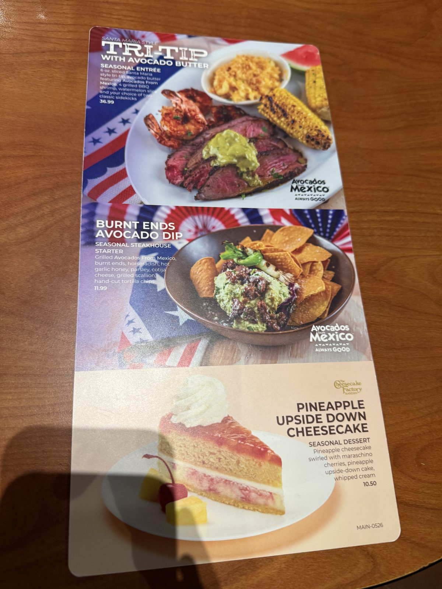
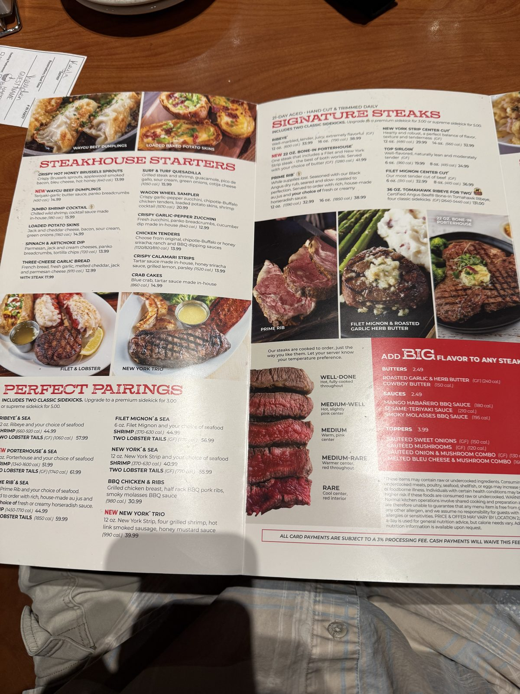

A Dry Ribeye and a Long Wait, at Black Angus Steakhouse

We sat down at Black Angus Steakhouse on East 13th Street in Vancouver, Washington, a little before six on a Tuesday, and I want to say up front that nobody who worked there was anything but nice to us. That matters, because almost everything else about the evening was slow, and it would have been a much worse night with a rude server attached to it instead of a friendly one running behind at every single step.
Twenty minutes, on repeat
Here is the shape of the evening, as close to literal as I can put it: about twenty minutes to get someone to the table in the first place. About twenty minutes from ordering to the first plates. About twenty minutes from those to the entrées. And then, after we'd finished eating, about twenty minutes more before dessert showed up — call it an hour and a half, start to finish, for a meal that never once felt like it was being rushed on our end. The room wasn't packed. There was no wall of tickets in a kitchen window I could point to and understand why. It was just uniformly, patiently slow, four separate times in a row, as if the pace were the house style rather than a bad night.

A dollar ninety-nine steak dinner, once
The menu cover here still carries the line The Original American Steakhouse, and it's a real claim rather than marketing filler. Stuart Anderson opened the first Black Angus in 1964 — he was Tacoma-born and Seattle-raised, and ran much of the business out of the Pacific Northwest for years — on a genuinely disruptive idea for the time: a full steak dinner, soup or salad and a loaded baked potato included, for $2.99. That's the format Texas Roadhouse and Ponderosa later copied. The chain peaked around 120 locations, filed for Chapter 11 in 2004 as beef costs and competition caught up with it, and is down to roughly 30 today, most of them in California with a handful left in the region where it started — this one among them. It's almost exactly the shape of the Red Robin story a few miles up the road: a regional chain that got big, then old, still living out its later years in a building it doesn't quite fill anymore.
What reached the table
There were enough of us that night that the table filled up fast once the food started arriving — a run of soup, potatoes, and steaks from more than one end of the table. The menu leans on shared formats for exactly that kind of night; the Campfire Feast, a fixed three-course package for two, is the one built for couples specifically (one starter, two entrées, four sidekicks and a dessert split down the middle, $69 to start), though that isn't what came to our table — we ordered off the regular menu, individually.

The Loaded Baked Potato Soup was one of the things that came out, and it arrived room temperature — not "not hot," actually room temperature, the way a bowl of soup gets after it's sat on a counter a while. The steaks, when they finally reached the table, told the same story. Room temperature is close to the honest word for most of what showed up, each plate a little warmer than the rest of it but only warm at best, never actually hot.


Two steaks out of everything that came to the table that night, and between them they tell most of the story on their own.
The New York strip was okay at best — a fair, unremarkable steakhouse strip, cooked to temperature, nothing wrong with it beyond the general chill that had settled over the table by the time it arrived. The ribeye is the one that actually bothered me, and it's worth saying plainly why: a ribeye is supposed to be the fatty, marbled, forgiving cut — the one that's hardest to dry out. This one came out dry and thin. That's backwards. If any steak on this menu should have survived a slow kitchen, it should have been this one, and it's the one that didn't.
Is Black Angus Steakhouse worth the wait?
About twenty minutes after we'd finished eating — roughly an hour and a half after we'd sat down — dessert arrived: what the menu calls the Giant Chocolate Chip Cowboy Cookie. The card is direct about what you're supposed to get:
Fresh from the oven, topped with vanilla ice cream.
Ours was warm the way the rest of the meal had been warm, which is to say not very, and not remotely fresh out of anything. I don't think it was a bad cookie underneath the temperature it arrived at. I think it's the same kitchen that sent out room-temperature soup and a dry ribeye, on the same clock that put twenty minutes between every single thing that happened that night, and by dessert I wasn't expecting a miracle.
The check added one more small mystery on the way out: a $2.50 "service fee" on the tab, unitemized, that nobody explained and I can't account for — a different thing entirely from the 3% card-processing surcharge printed right on the menu (see below), which is at least honest about what it is and why. Who knows what the $2.50 was for. Small dollar amount, but it's the whole evening in miniature: not one single outrageous thing, just a run of small unexplained gaps between what you're promised and what actually shows up.
None of it reads to me as a bad restaurant, exactly. It reads as a restaurant that has stopped being fast without ever deciding to stop charging fine-dining prices, with a staff that's genuinely pleasant to sit in front of while that happens.
The rest of the menu, for reference
Since the camera was already out, here's the fuller menu for anyone weighing a visit — the cover, the seasonal specials, and the full steak-and-starter lineup with prices and calories.



The practical bit
Black Angus Steakhouse — 415 E 13th St, Vancouver, WA 98660. 📍 Get directions
Hours: Sun 11am–9pm · Mon–Thu 3pm–10pm · Fri 12pm–10pm · Sat 11am–10pm.
Worth knowing: the Campfire Feast is $69 for two — one starter, two entrées, four shared sidekicks, one dessert. New York strip, top sirloin, shrimp, salmon and roasted half chicken are included at that price; ribeye, prime rib and filet mignon each add $7. À la carte, a 12 oz ribeye is $33.99 and a 12 oz New York strip is $29.99. Card payments carry a 3% processing fee, printed plainly on the menu — cash waives it. Budget close to two hours at the table.